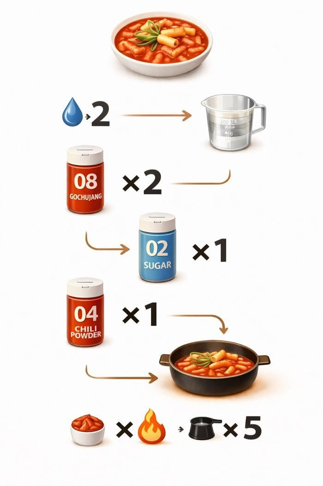
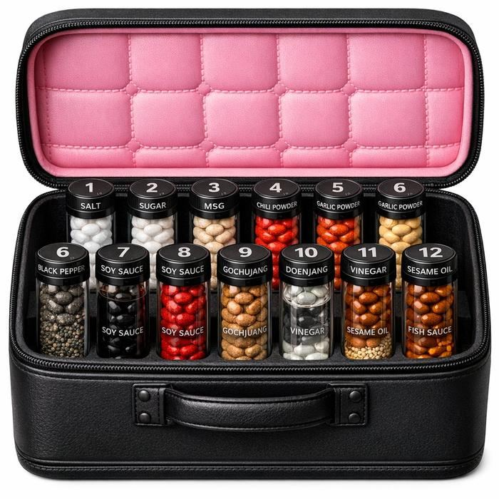
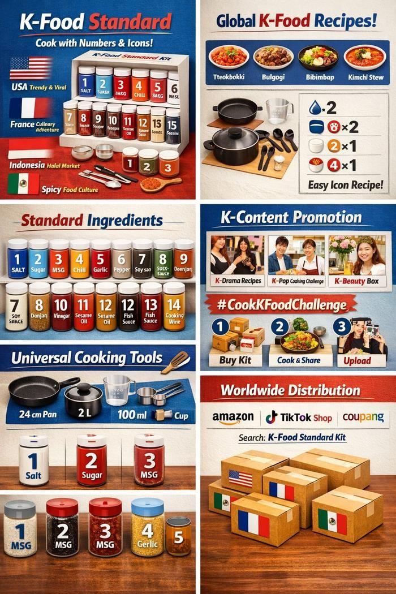

숫자와 아이콘만으로 전 세계 누구나 K-푸드를 조리할 수 있도록, 양념과 조리도구를 표준화한 글로벌 K-푸드 키트 기획안입니다.
피코쌤(김민구) · AI 프레젠테이션 컨설턴트 & 발표 코치 · 사회 문제 해결 방안 제시 · 2026.10 업데이트
한눈에 보기
문제
2025년 K-푸드 플러스 수출은 136억 2천만 달러로 역대 최대였고, 라면만 15억 2천만 달러였습니다. 관심은 커졌지만 K-푸드 레시피는 대부분 한국어 기반이고, 나라마다 계량 단위와 조리도구가 달라 외국인이 맛을 재현하기 어렵습니다. 고추장·된장 같은 양념은 번역만으로 이해되지 않습니다.
해법
핵심 양념 15종을 번호가 새겨진 표준 용기와 계량 단위로 통일하고, 레시피를 언어 없이 숫자·아이콘으로만 표시하는 글로벌 키트를 만듭니다.
효과
언어 장벽 없는 K-푸드 접근성, 한국식 양념 수출 확대, 요리 체험 관광·교육 콘텐츠로 확장.
숫자로 보는 문제
136억 2천만 달러K-푸드 플러스 수출액 (전년 대비 +5.1%, 역대 최대)농림축산식품부 · 2025년 실적 출처: 헤럴드경제 2026.1.11 보도
15억 2천만 달러라면 수출액 (전년 대비 +21.9%)농림축산식품부 · 2025년 실적 출처: 헤럴드경제 2026.1.11 보도
수치는 공식 발표를 인용한 보도에서 확인했으며, 기준 시점이 지나면 최신 발표로 갱신이 필요합니다. (2026.10 확인)

🔢 숫자·아이콘 기반 레시피 예시 (떡볶이)

🧳 번호가 새겨진 표준 양념 휴대 키트

🌍 브랜드 컨셉 — 글로벌 유통·콘텐츠 연계 전략
CHALLENGE 해결하고자 한 과제
K-푸드 레시피는 대부분 한국어 기반이고, 나라마다 계량 단위(tablespoon·gram·cup)와 조리도구 크기가 달라 외국인이 따라 만들기 어렵습니다.
고추장·된장처럼 번역만으로는 이해하기 힘든 한국식 양념의 장벽도 큽니다.
"레고처럼 요리하는 K-푸드" — 언어 없이 숫자와 아이콘만 보고 전 세계 누구나 조리할 수 있는 표준 키트를 제안합니다.
#언어 장벽#조리 표준 부재#접근성 미흡#K-푸드 세계화#아이콘 레시피#글로벌 K-푸드 키트
SOLUTION 기존 K-푸드 레시피의 한계 → K-Food Standard의 해법
기존 K-푸드 레시피, 이런 점이 어려웠다면
대부분 한국어 기반 레시피 — 번역해도 의미가 애매함
tablespoon·gram·cup 등 나라마다 다른 계량 단위
냄비·팬의 크기와 두께가 제각각
고추장·된장 등 한국식 양념을 이해하기 어려움
K-Food Standard라면
핵심 양념 15종을 알약 형태로 표준화 — 계량이 간편
양념통 규격·디자인을 통일하고 번호+영문명 각인
계량 가능한 뚜껑(지름 3cm 원통) + 표준 팬·냄비·계량스푼·컵 세트
레시피는 번호·계량 횟수·투입 시간을 숫자와 아이콘으로만 표시
온라인 쇼핑몰에서 "K-Food Standard" 검색으로 구매, 양념만 리필 가능
메이크업 박스처럼 펼쳐지는 휴대형 패키지
1 소금Salt
2 설탕Sugar
3 MSGMSG
4 고춧가루Chili Powder
5 마늘 파우더Garlic Powder
6 후추Black Pepper
7 간장Soy Sauce
8 고추장Gochujang
9 된장Doenjang
10 식초Vinegar
11 참기름Sesame Oil
12 깨소금Sesame Seed
13 액젓Fish Sauce
14 맛술Cooking Wine
15 물엿Syrup
PLAN 추진 방안 — 4단계
1
양념 표준화
소금·고추장·참기름 등 핵심 양념 15종을 선정해 알약 형태로 계량을 간편화합니다.
2
패키지·도구 디자인
번호·영문명이 각인된 통일 양념통과 계량 뚜껑, 표준 조리도구 세트를 설계합니다.
3
아이콘 레시피 제작
떡볶이·비빔밥 등 대표 K-푸드를 숫자+아이콘 기반 레시피로 변환합니다.
4
글로벌 유통
온라인 쇼핑몰에 입점하고, SNS 챌린지(#CookKFoodChallenge)로 확산을 유도합니다.
IMPACT 기대 효과
🌾한국식 양념 수출 증가 (농식품 분야)
🧑🍳요리 체험형 관광 콘텐츠로 확장
📚글로벌 요리 교육 자료로 활용
🌐언어 장벽 없는 접근성 확보
🏆세계 최초 글로벌 조리 표준 정립
🏷️"K-Food Standard" 브랜드 확립
AI WORKFLOW · 피코쌤 AI 문제해결 5단계
이 문제를 AI로 기획한다면 — 구성 방법과 결과물 완성까지
위의 문제 인식과 해결 방안은 피코쌤이 직접 고안했습니다. 아래는 같은 주제를 ChatGPT · Claude · Gemini 같은 생성형 AI로 기획하고 발표 자료까지 완성할 때의 권장 순서입니다. 핵심은 AI에게 답을 받는 것이 아니라 문제 정의 → 근거 → 설계 → 시각화 → 설득의 순서로 질문하는 것입니다. 예시 프롬프트는 그대로 복사해 쓸 수 있습니다.
1문제 정의·근거 수집
해외에서 K-푸드 관심은 큰데 '직접 만들기'에서 막힌다는 근거를 모읍니다.
추천 도구 · Perplexity · ChatGPT 검색, Google 트렌드
예시 프롬프트해외 K-푸드 관심도와 한국 양념 수출 추이를 보여주는 공공 데이터와 조사 자료를 표로 정리해줘. 기관명, 기준 연도, 원문 링크를 반드시 적고, 외국인이 한식 조리에서 겪는 어려움을 다룬 조사가 있으면 함께 찾아줘.
결과물 — 근거 데이터 1장 (aT 한국농수산식품유통공사 농식품 수출 정보, 한식진흥원 해외 한식 소비자 조사, 국가별 검색량 추이 등)
2이해관계자 분석
해외 소비자, 양념 제조사, 해외 온라인 유통 채널, 한식 크리에이터, 수입국 식품 규제 기관의 관점을 정리합니다.
추천 도구 · ChatGPT · Claude
예시 프롬프트K-Food Standard 키트의 이해관계자를 해외 소비자·양념 제조사·해외 온라인 유통 채널·한식 크리에이터·수입국 식품 규제 기관으로 나누고, 각자의 이익·우려·설득 포인트를 표로 정리해줘.
결과물 — 이해관계자 맵 + 1차 진출 국가 후보
3해결안 설계·검증
'양념 15종이면 정말 충분한가'를 AI 분석으로 검증합니다.
추천 도구 · Claude · ChatGPT (데이터 분석)
예시 프롬프트대표 K-푸드 30가지의 일반적인 레시피에서 쓰이는 양념을 표로 정리하고, 소금·설탕·고추장 등 15종 표준 양념만으로 몇 개 메뉴를 만들 수 있는지 계산해줘. 빠지는 양념이 있으면 대체 방법도 제안해줘.
결과물 — 양념 커버리지 분석표 (15종으로 만들 수 있는 메뉴 비율)
4시각화·프로토타입
언어 없이 읽히는 아이콘 레시피와 패키지를 시각화하고, 라벨을 다국어로 검수합니다.
추천 도구 · ChatGPT · Gemini 이미지 생성, Claude 번역 검수
예시 프롬프트떡볶이 레시피를 '양념 번호 × 계량 횟수 × 투입 시간' 형식의 표로 바꿔줘. 글자 없이 숫자와 아이콘만으로 이해할 수 있게 단계별로 나누고, 영어·일본어·스페인어 라벨 후보도 붙여줘.
결과물 — 아이콘 레시피 시안 + 휴대용 양념 키트 패키지 이미지 + 다국어 라벨
5발표 스토리라인·Q&A 리허설
수출 지원 기관이나 유통사가 '팔릴까, 통관될까, 브랜드가 될까'를 판단할 수 있게 구성합니다.
추천 도구 · Claude · ChatGPT
예시 프롬프트너는 해외 식품 유통사의 바이어야. K-Food Standard 키트 제안에서 가격·통관·품질 유지·경쟁 제품 측면의 약점을 공격하는 질문 10개와 30초 답변을 만들어줘.
결과물 — 10장 발표자료 + 예상 질문 10개와 답변
발표 스토리라인 — 10장 구성안
K-푸드는 좋아하는데, 왜 만들지 못할까
근거 데이터 — 관심도와 양념 수출
장벽 3가지 — 언어·계량 단위·양념
해법 — 레고처럼 요리하는 K-푸드
표준 양념 15종과 커버리지 분석
숫자·아이콘 레시피 예시 (떡볶이)
패키지와 표준 조리도구
글로벌 유통과 SNS 챌린지
기대 효과 — 수출·관광·교육
요청 — 시범 국가와 협력 파트너
완성 결과물 체크리스트
문제 정의·근거 수집: 근거 데이터 1장
이해관계자 분석: 이해관계자 맵 + 1차 진출 국가 후보
해결안 설계·검증: 양념 커버리지 분석표
시각화·프로토타입: 아이콘 레시피 시안 + 휴대용 양념 키트 패키지 이미지 + 다국어 라벨
발표 스토리라인·Q&A 리허설: 10장 발표자료 + 예상 질문 10개와 답변
AI로 기획할 때 주의할 점
수출 수치와 조사 결과는 원문에서 기준 연도와 함께 재확인합니다.
알약형 양념의 제조 가능성과 보존성은 식품 전문가 검증이 필요합니다.
수입국별 식품 표시·통관 규정은 국가마다 다르므로 별도 확인이 필요합니다.
자주 묻는 질문
K-Food Standard란 무엇인가요?
핵심 한국 양념 15종을 번호가 새겨진 표준 용기와 계량 단위로 통일하고, 레시피를 숫자와 아이콘만으로 표시해 언어와 관계없이 K-푸드를 조리할 수 있게 하는 글로벌 키트 기획안입니다.
어떤 문제를 해결하나요?
한국어 위주의 레시피, 나라마다 다른 계량 단위와 조리도구, 번역만으로 이해하기 어려운 한국식 양념 때문에 외국인이 K-푸드를 집에서 재현하기 어려운 문제를 줄입니다.
왜 양념이 15종인가요?
소금·설탕·간장·고추장·된장·참기름 등 대표 메뉴에 반복해서 쓰이는 양념을 묶은 구성입니다. AI로 대표 메뉴 레시피의 양념 사용 빈도를 분석하면 15종이 얼마나 많은 메뉴를 커버하는지 검증할 수 있습니다.
가장 큰 반론은 무엇인가요?
알약형 양념의 제조·보존 가능성과 수입국별 식품 규제입니다. 시제품 검증과 1차 진출 국가 선정을 발표의 필수 내용으로 둡니다.
이런 문제 해결 기획을 AI로 직접 해볼 수 있나요?
가능합니다. 피코쌤은 기업·기관 교육에서 '문제 정의 → 근거 수집 → 해결안 설계 → 시각화 → 발표'의 5단계를 ChatGPT·Claude·Gemini로 실습하고, 마지막에 결과를 발표하고 피드백을 받는 과정으로 진행합니다.
PCO
피코쌤 (김민구)
AI를 깊이 이해하는 프레젠테이션 전문가, 피코쌤 — 연 200회 기업 강의 · AI 관련 저서 3권
PTC 프레젠테이션 컨설팅 대표(2007~). 한국금융연수원 · 중소벤처기업연수원 전문강사. 삼성SDS · KT · GS건설 등 경쟁입찰 PT 컨설팅, 국립생물자원관 혁신성과 발표대회 1등 2회 · 2등 1회 등 실전 프로젝트형 PT 50여 건을 수행했습니다. 저서 5권.
이 페이지의 문제 인식과 해결 방안은 피코쌤의 아이디어이며, 수치와 법규는 실행 전 원문 확인이 필요합니다.